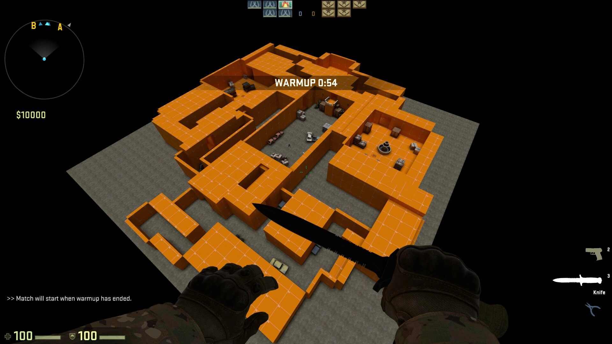
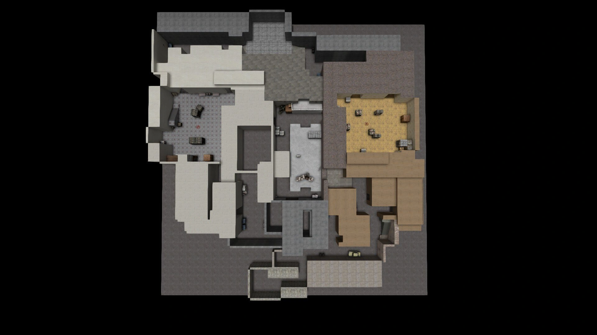
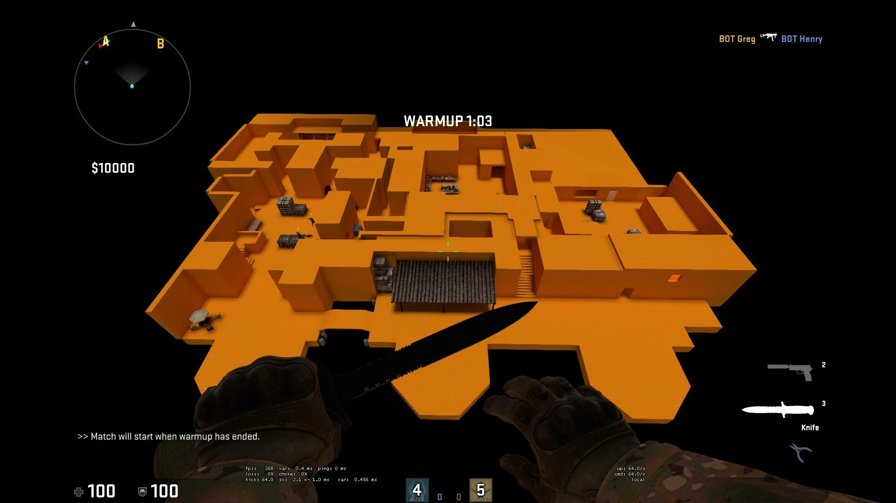
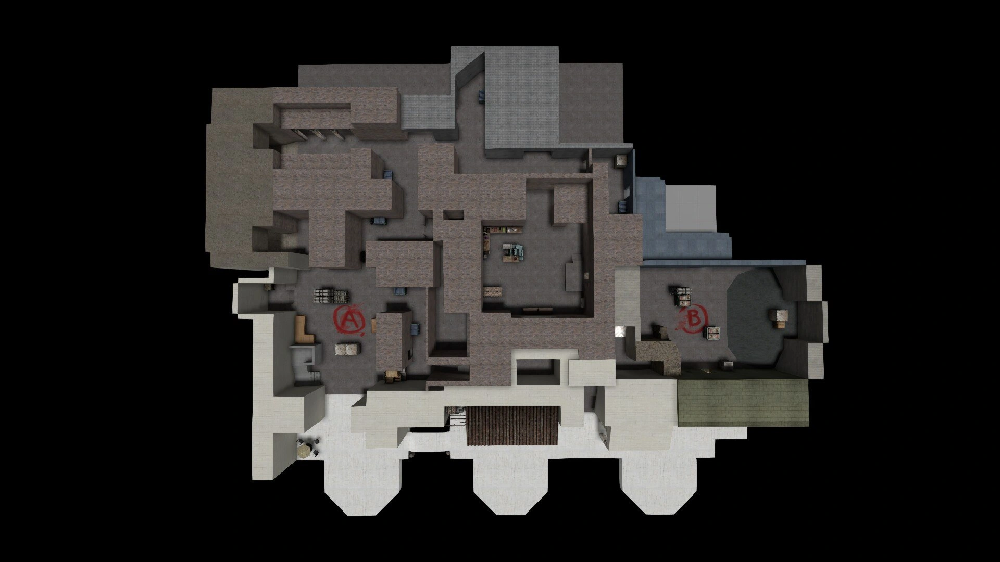
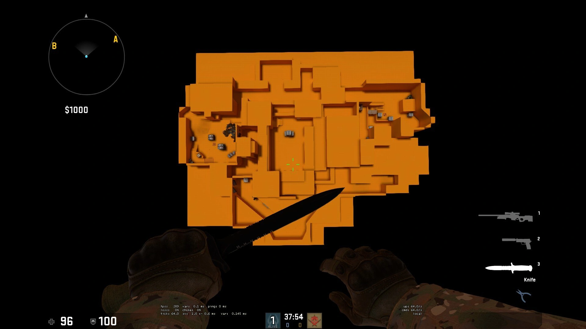
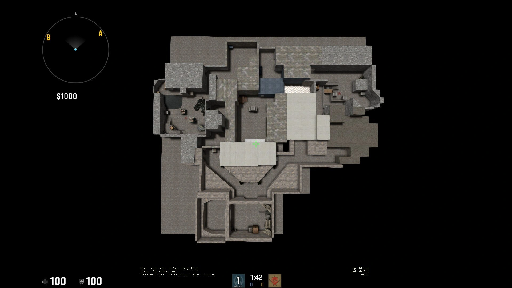

de_streetsThe following CS:GO maps demonstrate my understanding and application of level design principles, with a focus on designing objective-based team tactical FPS maps. following Counter-Strike's traditional four square map design pattern, I challenged myself to design and graybox 3 different sized maps, one small, one medium and one larger sized map.
CS:GO SDK
Windows
Less than 4 weeks
Solo Designer
de_streets is a large scale map with wide alley ways, big bomb sites and numerous ways to enter each bomb site. I designed this map with this intent so players on the defending team have multiple locations throughout the map to hide and hold angles. Players on the attacking team have multiple options to enter bomb sites. Gun fights will feel very spacious for players on both teams.


de_pierde_pier is a medium sized map with a heavier focus on gun fights and interaction on bomb sites. I designed the two bomb sites to be unique from each other to give the players different gameplay experiences when playing on these bomb sites. "A" bomb site is more compact with closer tight corners to clear, with a focus on CQC (close-quarter combat). "B" bomb site is more spacious with a focus on close-medium ranged gun fights. It also offers players more verticality as players can take fights from ramps and second floor windows.


de_constructde_construct is a small sized map with an emphasis on verticality and close-medium ranged gun fights throughout the map. I designed this map with the intention for players to fight for height advantage. For example, players can fight for control of a sniper's nest which overlooks the middle of the map. "A" bomb site is designed with ramps and open areas for players to take medium ranged aim battles. "B" bomb site is designed for tight corner clearing and CQC.